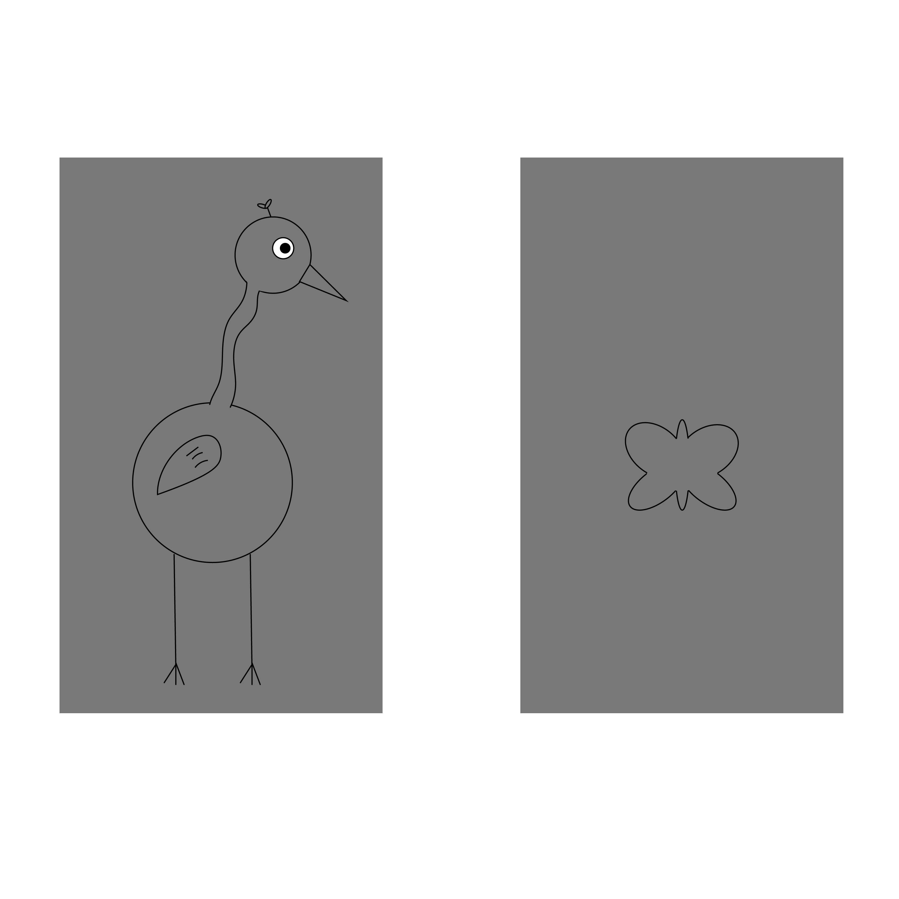

<!DOCTYPE html>
<html>
  <head>
    <title>CC Experiment</title>
    <script src="jsPsych/jspsych.js"></script>
    <script src="jsPsych/plugin-html-keyboard-response.js"></script>
    <script src="jsPsych/plugin-image-keyboard-response.js"></script>
    <script src="jsPsych/plugin-video-keyboard-response.js"></script>
    <script src="jsPsych/plugin-preload.js"></script>
    <script src="jspsych/plugin-html-slider-response.js"></script>
    <script src="jspsych/plugin-image-keyboard-response_MAS.js"></script>
    <script src="jspsych/plugin-html-keyboard-responseMAS.js"></script>
    <script src="jspsych/plugin-fullscreen.js"></script>
    <script src="jspsych/plugin-survey-text.js"></script>
    <script src="jspsych/plugin-survey-multi-choice.js"></script>
    <script src="jspsych/plugin-survey-multi-select.js"></script>
    <script src="jspsych/plugin-html-button-response.js"></script>
    <script src="https://unpkg.com/@jspsych-contrib/plugin-pipe"></script>
    <script src="colorCalibration_srgb_InherentFeat.js"></script>
    <script src = "ishiharaPlates.js"></script>

    <link href="jsPsych/jspsych.css" rel="stylesheet" type="text/css" />
    <script src="https://unpkg.com/@jspsych/extension-pipe@0.2.0"></script>
  </head>
  <body></body>
  <script>

<!--------------------- Here is where the experiment is created ------------------------------------------->


// ---------- UPDATE THESE AS NEEDED------------------//

    //General experiment info to update
    console.log("Updated last: 10/27-v1")

    var expServer = 1 // 0 = testing mode; 1 = on server 
        console.log("serverMode", expServer)

    var expType = 2 // 0 = SONA; in-lab version; 1 = sona ONLINE ; 2 = CloudResearch online version (relevant for consent & debriefing)
        console.log("consent:", expType)

    var expTime = 15; // How long experiment will take in minutes
    var experimenterName = "mschoenl@highpoint.edu"  //Update to your contact info. this is presented if an error arises for a participantd
    var numConditions = 1; //Number of conditions. 
    var numTasks = 4;  //Number of experimental tasks (add 1 to include Color vision test)

    //CloudResearch completion code 
    var completion_code = "F0EC793A86";  //Code copied from mTurk Cloud Research Fixed completion code


    // Set background color  
    document.body.style.backgroundColor = "rgb(120, 120, 120)"             


    /*----------------------------------START OF EXPERIMENT TIMELINE: DO NOT CHANGE ------------------------------------ */

    
  // Pop-up box if people try to leave the page (including refreshing) 
    window.onbeforeunload = function() {
        return "If you leave or refresh the page, you will not be able to finish the experiment.";
    };

    
    //initialize and prompt global variables to record
    var jsPsych = initJsPsych({
      on_trial_finish: function(data) {
          if (data) {
            data.subjectID = subject_id;
            data.condition = whichCondition;
            data.workerID = workerID;
            data.startTime = start_time;
            data.expVersion = "ChangingColors-FA26"
          }
      },
      on_finish: function() {
        if (expServer == 0){
          jsPsych.data.displayData();
          jsPsych.data.get().localSave('csv',subject_id+".csv", {flatten:true}) // saves to local device if not on server. 
        }
      }
    });


    //give subjects a random ID
    const subject_id = jsPsych.randomization.randomID(10);
    const filename = `${subject_id}.csv`;
    var urlvar = jsPsych.data.urlVariables();
    var workerID = urlvar.id // urlvar.id  


    // Set condition
    function getRandomIntInclusive(min, max) {
            min = Math.ceil(min);
            max = Math.floor(max);
            return  Math.floor(Math.random() * (max - min + 1));
        }
    assigned_condition = getRandomIntInclusive(0,numConditions-1);
    var whichCondition = assigned_condition; 
      console.log("whichCondition: ", whichCondition)

    // Get Start time
    var start_time = new Date();


    //Initialize colors
    var calibrationColors = colorCalibration_srgb()
    var promptedColorR1 = calibrationColors["Red"]
    var promptedColorG1 = calibrationColors["Green"]
    var promptedColorB1 = calibrationColors["Blue"]


    //start timeline
    var timeline = [];


  /*----------------------------------Standard functions & variables ------------------------------------ */

    //Fixation trial
    var fixation = {
        type: jsPsychHtmlKeyboardResponse,
        stimulus: '<div style="font-size:60px;">+</div>',
        choices: "NO_KEYS",
        trial_duration: 500, 
        data: {
            task: 'fixation'
        }
    };


   // Utility function to shuffle an array (Fisher-Yates)
    function shuffle(array) {
    let arr = [...array];
    for (let i = arr.length - 1; i > 0; i--) {
      const j = Math.floor(Math.random() * (i + 1));
      [arr[i], arr[j]] = [arr[j], arr[i]];
    }
    return arr;
}


// ------------------------------------ START OF EXPERIMENT TRIALS ------------------------------------//

    /* preload images */ 
    var Preload = { 
      type: jsPsychPreload,
      video: ["img/S1Bl_N1Gr_EChange_S2Bl_N2Gr_EChange.mp4", 
                "img/S1Bl_N1Pi_EKeep_S2Bl_N2Pi_EKeep.mp4",
                "img/S1Bl_N1Gr_EChange_S2Bl_N2Pi_EKeep.mp4",
                "img/S1Bl_N1Gr_EChange_S2Bl_N2Pi_FKeep.mp4",
                "img/S1Or_N1Gr_EChange_S2Or_N2Gr_EChange.mp4",
                "img/S1Or_N1Pi_EKeep_S2Or_N2Pi_EKeep.mp4",
                "img/S1Or_N1Gr_EChange_S2Or_N2Pi_EKeep.mp4",
                "img/S1Or_N1Pi_EKeep_S2Or_N2Gr_FKeep.mp4",
                "img/S1Bl_N1Gr_EChange_S2Or_N2Gr_EChange.mp4",
                "img/S1Bl_N1Gr_FKeep_S2Or_N2Gr_FKeep.mp4",
                "img/S1Bl_N1Gr_FKeep_S2Or_N2Gr_EChange.mp4", 
                "img/S1Bl_N1Pi_EKeep_S2Or_N2Pi_EKeep.mp4",
                "img/S1Bl_N1Pi_FKeep_S2Or_N2Pi_FKeep.mp4",
                "img/S1Bl_N1Pi_EKeep_S2Or_N2Pi_FKeep.mp4",
                "img/S1Bl_N1Gr_FKeep_S2Or_N2Pi_FKeep.mp4"] 
      };
    timeline.push(Preload);

    
    
if (expType == 0){ 

//Booth trial
var booth_trial = {
      type: jsPsychHtmlKeyboardResponse,
      stimulus: '<p>Experimenter:'+
          '<p>First, please add the subject ID number to the end of the experiment URL & re-load by pressing "enter".'+
          "<p>Second, which Booth is this: type the subject ID number and then continue.",
      choices: ["6", "7"]
      }
    timeline.push(booth_trial) 


 // Initial welcome screen
    var initial_screen = {
      type: jsPsychHtmlButtonResponse,
      stimulus: '<p>Experimenter:'+
          '<p> please double check that the subjectID is at the end of the experiment URL.'+
          '<br>Then click begin'+
          '<p> Once you click that button, it will not be possible to restart the experiment.',
      choices: ['Begin Experiment']
    }
    timeline.push(initial_screen);
 
} else if (expType > 0){

    // Initial welcome screen
    var initial_screen = {
        type: jsPsychHtmlButtonResponse,
        stimulus: '<strong>Welcome to our experiment!</strong>' +
            '<br>Please make sure you are using a computer to complete this experiment (i.e. NOT a phone or tablet).'+
            "<br>Please ensure your monitor's brightness and volume is turned all the way up."+
            '<br>For best viewing, please sit approximately 1.5 feet to 2 feet from your computer screen.</p>'+
            '<br>At the bottom of this screen, you will see a button that says "Begin Experiment".'+
            '<br>Please only click that button when you are ready to complete the '+expTime+' minute experiment in one sitting.</p>'+
            '<p> Once you click that button, it will not be possible to restart the experiment.',
        choices: ['Begin Experiment'] 
            }
    timeline.push(initial_screen);
}

var whichBooth = "";


//Give each subject a random ID
if (expType == 0){
  var subjIDenter = {
      type: jsPsychSurveyText,
      questions: [
          {prompt: "subjectID", name: 'subjNumber', rows: "1", columns: "15", required: true,},
          {prompt: "Experimenter", name: 'experimenter', rows: "1", columns: "15", required: true,},
          {prompt: "Confirm Booth Number", name: 'booth', rows: "1", columns: "15", required: true,}
          ],
      preamble: "Experimenter: please complete.",
      button_label: "Begin",
      randomize_question_order: false,
      autocomplete: false
      }
  timeline.push(subjIDenter);

 }


 
 // Consent form
    var consentSign = {
            type: jsPsychSurveyMultiSelect,
            questions: [
                {prompt: 
                  `<div style="max-width: 900px; margin: 0 auto; padding: 20px; border: 1px solid #ccc; border-radius: 10px;">
                   <div style="text-align:center;"><strong>HIGH POINT UNIVERSITY</strong></div>
                  <p><div style="text-align:center;"><strong>Research Participant Consent Form</strong></div>
                  <br><br><strong>Title of the Study: </strong>Investigating how people perceive and interpret visual information
                 <p><strong>Principal Investigator:</strong> Dr. Melissa Schoenlein (mschoenl@highpoint.edu)
                  <br><br>You have been asked to participate in a research study. The information in this form is meant to help you decide whether or not to participate. If you have any questions, please ask.
                  <br><br><strong><u>Why you are being asked to be in this research study:</u></strong>
                  <br>You have been asked to participate because you saw a description of the study, met the eligibility criteria, and signed up to participate via CloudResearch and/or Amazon Mechanical Turk. To be eligible, you must be at least 18 years of age.
                  <br><br>The study will include approximately 1000 adults who agree to participate via Cloud Research and/or Amazon Mechanical Turk HITs.
                  <br><br><strong><u>What the study is about:</u></strong>
                  <br>You are invited to participate in this research study about how visual features influence the ability to perceive, interpret, and remember information in visual displays.  The purpose of this research is to understand the factors that influence how people learn about, perceive, and interpret visual information.
                  <br><br><strong><u>What you will be asked to do:</u></strong>
                  <br>If you decide to participate in this research, you will be shown visual displays on a computer containing images and/or text. You will be asked to make judgments about these displays. For example, you may see a novel object and be asked to learn the object’s name or you may be presented with colors and asked to rate how much that color reminds you of certain objects. These judgements can be made using button presses on a keyboard/mouse. You may also be asked to respond to questions about your experience during the experiment. For example, you may be asked what strategy you used to complete a task or how challenging the task felt. You may also be asked to complete a standard color vision test, which will examine your ability to perceive different colors. Some tasks may include sounds (e.g., beeps) that will be played via the computer speakers and/or headphones.
                  <br>You will be asked to complete 1-6 tasks or questionnaires. Your participation will include 1 session that will last approximately 15-60 minutes, as indicated on SONA when you signed up to participate. 
                  <br><br><div style="text-align:center;"><strong><u>Important Things to Know about Being Part of the Study</u></strong></div>
                  <br> <div style="margin-left: 40px; text-align: left;">1. <strong>You don't have to do this.</strong> Participation is completely voluntary and you can withdraw at any time without penalty, even after you start. Deciding not to participate or deciding to withdraw will not affect your relationship with the investigator or High Point University.</div>
                  <br> <div style="margin-left: 40px; text-align: left;">2. <strong>Pay.</strong> The amount of compensation depends on the length of the task, based on a rate of $10 per hour. The compensation amount for this HIT, as specified in the HIT description, was pre-determined based on the amount of time it took previous participants to do similar tasks. If you do withdraw prior to the end of the study, you will receive no compensation.</div>
                  <br> <div style="margin-left: 40px; text-align: left;">3. <strong>Benefits.</strong> There are no direct benefits to participants for participating in this study. This research will benefit the field of psychology by furthering our knowledge of human behavior.</div>
                  <br> <div style="margin-left: 40px; text-align: left;">4. <strong>Risks to you.</strong> We believe that there are minimal risks to you.  If you are hurt or experience any negative effects, you may seek treatment through a health service provider.</div>
                  <br> <div style="margin-left: 40px; text-align: left;">5. <strong>Your responses will be kept confidential.</strong> Your name will not be stored with your responses and only those involved in the research project will have access to the responses of individuals.</div>
                  <br> <div style="margin-left: 40px; text-align: left;">6. <strong>If you have questions about the study</strong> Please contact Dr. Melissa Schoenlein at <u>mschoenl@highpoint.edu</u> or 336-841-2878.</div> 
                  <br> <div style="margin-left: 40px; text-align: left;">7. <strong>If you have questions regarding your rights as a subject in this study.</strong> You may contact Dr. Kimberly Wear Jones, IRB Chair, (336) 841-9246, kwjones@highpoint.edu.</div>
                  <br><br><strong>Your data will be used for:</strong> Your data may be used as part of publications about this research. Further, your data may be sent to researchers outside of High Point University so that other scientists can replicate the experiment findings. Any personal information that could identify you will be removed before the data is shared or used publications.
                  <br><br> By clicking the box below, you confirm that you have read this consent form, had an opportunity to ask any questions about your participation in this research and voluntarily consent to participate. You may print a copy of this form for your records.
                  <br><br>Please click the box below next to the text “I consent” to give your informed consent to participate. 
                </div>`,
                options: [`<strong>I consent</strong>`],
                horizontal: false,
                required: true,
                name: 'Consent'},
                ],
            button_label: "Start Experiment",
            };

  timeline.push(consentSign);


/*-------------------- BEGINNING OF DEMOGRAPHIC INFO ----------------------------------------*/ 


  //Enter fullscreen
    var enter_fullscreen = {
      type: jsPsychFullscreen,
      fullscreen_mode: true
  }
  timeline.push(enter_fullscreen)
   

// Overview instructions of experiment 
    var overview_instructions = {
        type: jsPsychHtmlButtonResponse,
        stimulus: 'Welcome! <p> This experiment involves several parts: demographic information, followed by '+numTasks+' tasks.' + 
            '<p> It will take about '+expTime+' minutes to complete all parts.',
        choices: ['Begin']
    }
    timeline.push(overview_instructions);

    

// Demographic questions
    // Age, gender, race/ethnicity, and language  
    var age_lang_demo = {
        type: jsPsychSurveyText,
        questions: [
            {prompt: "Age", name: 'Age', rows: "1", columns: "3", required: true,},
            {prompt: "Gender", name: 'Gender', rows: "1", columns: "15", required: true,},
            {prompt: "Race/ethnicity", name: 'Race/ethnicity', rows: "1", columns: "30", required: true,},
            {prompt: "List all languages you know", name: "Languages", rows: "1", columns: "40", required: true,}
            ],
        preamble: "Please answer the following questions. Click 'Done' to continue. ",
        button_label: "Done",
        randomize_question_order: false
        }
    timeline.push(age_lang_demo);


/*----------------------------------Part 1: Bird Sorting------------------------------------ */


    // Define instructions trial 
    var instrBirds = {
      type: jsPsychHtmlKeyboardResponse,
      stimulus: `
      <div style="max-width: 80%; margin: 0 auto; padding: 20px;">
        <p> <strong>TASK 1 of `+numTasks+`</strong>
        <p>A type of bird-like animals, called Speatures, have recently been discovered. 
        <br>The scientists found that the animals must eat a bug-like animal to survive, called Nerks.
        <br> Here are examples of these animals: 
             
        <div style="display: flex; justify-content: space-between;
             width: 370px; margin: 30px auto 0; position: relative; top: -30px; ">
        <p style="font-size: 20px;"><strong>Speature</strong><br>Left arrow key</p>
        <p style="font-size: 20px;"><strong>Nerk</strong><br>Right arrow key</p>
                </div>

          <div style="justify-content: space-between;
            width: 500px;height: 275px;  margin: 0px auto 0;">
             
          </div>

          <div style="position: relative; top:-50px;"
        <p>Your job, as the research assistant, is to help the scientists track the animal's behavior. First, you must learn to identify if an animal is a Speature or a Nerk.
         <br>On each trial, an animal on the screen, with the word "Speature" on the left, and "Nerk" on the right. 
         <br>If you think the animal is a Speature, press the left arrow key. 
         <br>If you think the animal is a Nerk, press the right arrow key. 
         <p>After you respond, you will be told the correct answer. The animal will move below the correct name.
        <br>There will be a short pause and then the next trial will begin.
        <br>At first it may feel like you're guessing, but as you see more animals and descriptions, you may begin to learn which animals are which. 
        <p>This task will take about 2 minutes to complete.
        <br>Press the spacebar to begin.</p>
        </div>
      `,
      post_trial_gap: 500, 
      choices: [" "],
      data: {
            task: 'instructions',
      }
    };
    timeline.push(instrBirds);

   
  //Create procedure
  const numbers = [0, 1];
 var gray_stimuli = [
  {stimulus: "img/Gray_Speature.png", correct_response:"ArrowLeft", target_name: "Speature", stimulus_height: 500, stimulus_top: 175},
  {stimulus: "img/Gray_Nerk.png", correct_response: "ArrowRight", target_name: "Nerk", stimulus_height: 500, stimulus_top: 175}];

 
   var gray_show = {
      type: jsPsychImageKeyboardResponseMAS,
      stimulus: jsPsych.timelineVariable('stimulus'),
      choices: ['ArrowLeft', 'ArrowRight'],
      render_on_canvas: false,
      stimulus_height: jsPsych.timelineVariable('stimulus_height'),
      stimulus_top: jsPsych.timelineVariable('stimulus_top'),
      maintain_aspect_ratio: true,
      prompt: `
            <div style="position: relative; top: -450px; left: 0; text-align: center;">
              <p style="font-size: 25px;">Is this a Speature or a Nerk?</p>
                <p style= "font-size: 20px;">Press the left or right arrow key</p>
            <div style="display: flex; gap: 450px; margin-top: 0px;">
                <p style="font-size: 30px;">Speature</p>
                <p style="font-size: 30px;">Nerk</p>
              </div>
            </div>`,
      data: {
        task: 'gray sorting',
        correct_response: jsPsych.timelineVariable('correct_response'),
        targetName: jsPsych.timelineVariable('target_name')  
      },
      on_finish: function(data){
        data.correct = jsPsych.pluginAPI.compareKeys(data.response, data.correct_response);
      }
    };

  
  
     //feedback trial
      var gray_feed= {
          type: jsPsychImageKeyboardResponseMAS,
          stimulus: jsPsych.timelineVariable('stimulus'),
          stimulus_height: jsPsych.timelineVariable('stimulus_height'),
           stimulus_top:jsPsych.timelineVariable('stimulus_top'),
          maintain_aspect_ratio: true,
          choices: "NO_KEYS",
          trial_duration: 500,  
          render_on_canvas: false,
          on_start: function(trial) {
            const last_trial = jsPsych.data.get().last(1).values()[0];
            const correct = last_trial.correct;
            const targetName = last_trial.targetName; // 
            let feedbackText = correct
              ? `YES, this is a <strong>${targetName}</strong>`
              : `NO, this is a <strong>${targetName}</strong>`;
            trial.prompt = `
                  <div style="position: relative; top: -450px; left: 0; text-align: center;">
                  <p style="font-size: 25px;">Is this a Speature or a Nerk?</p>
                    <p style="font-size: 20px;">${feedbackText}</p>
                  <div style="display: flex; gap: 450px; margin-top: 0px;">
                      <p style="font-size: 30px;">Speature</p>
                      <p style="font-size: 30px;">Nerk</p>
                    </div>
                  </div>`;
            },
          data: {
            task: 'gray feedback'
          },
        };

        

     //Bird feedback movement trial
      var gray_motion = {
          type: jsPsychImageKeyboardResponseMAS,
          stimulus: jsPsych.timelineVariable('stimulus'),
          stimulus_height: jsPsych.timelineVariable('stimulus_height'),
          stimulus_top: jsPsych.timelineVariable('stimulus_top'),
          maintain_aspect_ratio: true,
          choices: "NO_KEYS",
          trial_duration: 500,  
          render_on_canvas: false,      
          on_start: function(trial) {
            const last_trial = jsPsych.data.get().last(2).values()[0];
            const correct = last_trial.correct;
            const targetName = last_trial.targetName;
            let feedbackText = correct
              ? `YES, this is a <strong>${targetName}</strong>`
              : `NO, this is a <strong>${targetName}</strong>`;
            trial.prompt = `
                    <div style="position: relative; top: -450px; left: 0; text-align: center;">
                      <p style="font-size: 25px;">Is this a Speature or a Nerk?</p>
                    <p style="font-size: 20px;">${feedbackText}</p>
                    <div style="display: flex; gap: 450px; margin-top: 0px;">
                      <p style="font-size: 30px;">Speature</p>
                      <p style="font-size: 30px;">Nerk</p>
                    </div>
                  </div>`;
            if (targetName == "Speature"){
                trial.stimulus_left = -270;
            }else if (targetName == "Nerk"){
                trial.stimulus_left = 270;
            }
          },
          data: {
            task: 'gray motion feedback'
          },
        };
        
        
    // define test procedure 
    var gray_procedure = {
      timeline: [fixation, gray_show, gray_feed, gray_motion],
      timeline_variables: gray_stimuli,
      repetitions: 8,
      randomize_order: true
    };
    timeline.push(gray_procedure);


    // define accuracy
    var debrief_block = {
      type: jsPsychHtmlKeyboardResponse,
      choices: [" "],
      stimulus: function() {

        var trials = jsPsych.data.get().filter({task: 'gray sorting'});
        var correct_trials = trials.filter({correct: true});
        var accuracy = Math.round(correct_trials.count() / trials.count() * 100);

        return `<p>You responded correctly on ${accuracy}% of the trials.</p>
          <p>Press the spacebar to continue to the next task. Thank you!</p>`;

      }
    };
    timeline.push(debrief_block);


/*----------------------------------Part 2: Bird video trials----------------------------------- */


    // define instructions trial 
    var instructions = {
       type: jsPsychHtmlKeyboardResponse,
      stimulus: `<strong>Task 2 of `+numTasks+`</strong>     
         <p> Great job! Now that you can correctly identify the difference between Speatures and Nerks,
          <br>the scientists would next like you to watch videos showing their interactions. 
         <br> Each video is about 12 seconds long and will feature multiple Speatures and multiple Nerks. There is no audio.
        
        <p>Your task as the research assistant is to pay close attention during the 15 videos,
        <br>so that you can answer questions from the scientists about the contents of the videos.
        <p>After each video, you will be presented with a question that will ask you about <br>the specific colors, interactions, or the order of events that you saw. 
        <br>The questions will feature two answer options, shown on the left and right of the screen.
        <p>If you think the option on the left is correct, please press the left arrow key.
        <br>If you think the option on the right is correct, please press the right arrow key. 

        <p>After you respond, you will be told the correct answer. 
        <br> Once you review your answer, you can press the spacebar to start the next video. 

        <p>This task will take about 5 minutes to complete.
        <p> When you are ready, please press the spacebar to begin the first video.` 
        ,
      post_trial_gap: 500
    };
    timeline.push(instructions);


    // define trial stimuli array for timeline variables 
    let birdtest_stimuli = [
    ];

    var trial_names = [
    "S1Bl_N1Gr_EChange_S2Bl_N2Gr_EChange", 
    "S1Bl_N1Pi_EKeep_S2Bl_N2Pi_EKeep",
    "S1Bl_N1Gr_EChange_S2Bl_N2Pi_EKeep",
    "S1Bl_N1Gr_EChange_S2Bl_N2Pi_FKeep",
    "S1Or_N1Gr_EChange_S2Or_N2Gr_EChange",
    "S1Or_N1Pi_EKeep_S2Or_N2Pi_EKeep",
    "S1Or_N1Gr_EChange_S2Or_N2Pi_EKeep",
    "S1Or_N1Pi_EKeep_S2Or_N2Gr_FKeep",
    "S1Bl_N1Gr_EChange_S2Or_N2Gr_EChange",
    "S1Bl_N1Gr_FKeep_S2Or_N2Gr_FKeep",
    "S1Bl_N1Gr_FKeep_S2Or_N2Gr_EChange", 
    "S1Bl_N1Pi_EKeep_S2Or_N2Pi_EKeep",
    "S1Bl_N1Pi_FKeep_S2Or_N2Pi_FKeep",
    "S1Bl_N1Pi_EKeep_S2Or_N2Pi_FKeep",
    "S1Bl_N1Gr_FKeep_S2Or_N2Pi_FKeep"
    ];


    let stimulus = []; 
    let stimulus1 = [];
    let trialNumber = 0;
    const totalTrials = 15;
    
    var trial_names_S = shuffle(trial_names);
   // console.log("length", trial_names_S.length)

    var questiontext = []; 
    const videoSet= [...Array(15).keys()]; // 0–24

    //Loop through all the videos
    for (let video of videoSet) {

        stimulus1[video] = trial_names_S[video]
       // console.log(video)
        //console.log("stimulus1[video]", stimulus1[video])

        //define the question, left/right lables and correct response for each video
        if (stimulus1[video] == "S1Bl_N1Gr_EChange_S2Bl_N2Gr_EChange") {
        var questiontext = "Did both Speatures change colors?";
        var leftLabel = "Yes";
        var rightLabel = "No";
        var correct_response = "ArrowLeft";
        var correctLabel = "Yes"

        
       } else if (stimulus1[video] == "S1Bl_N1Pi_EKeep_S2Bl_N2Pi_EKeep") {
        var questiontext = "Did either of the Nerks change color?";
        var leftLabel = "Yes";
        var rightLabel = "No";
        var correct_response = "ArrowRight";
        var correctLabel = "No"


        } else if (stimulus1[video] == "S1Bl_N1Gr_EChange_S2Bl_N2Pi_EKeep") {
        var questiontext = "What was the color of the Nerk that appeared first?";
        var leftLabel = "Pink";
        var rightLabel = "Green";
        var correct_response = "ArrowRight";
        var correctLabel = "Green"


        }else if (stimulus1[video] == "S1Bl_N1Gr_EChange_S2Bl_N2Pi_FKeep") {
        var questiontext = "Did either Speature eat a Nerk?";
        var leftLabel = "Yes";
        var rightLabel = "No";
        var correct_response = "ArrowLeft";
        var correctLabel = "Yes"


        }else if (stimulus1[video] == "S1Or_N1Gr_EChange_S2Or_N2Gr_EChange") {
        var questiontext = "What was the color of the Speature that appeared first?";
        var leftLabel = "Orange";
        var rightLabel = "Blue";
        var correct_response = "ArrowLeft";
        var correctLabel = "Orange"


        }else if (stimulus1[video] == "S1Or_N1Pi_EKeep_S2Or_N2Pi_EKeep") {
        var questiontext = "Did both Speatures change colors?";
        var leftLabel = "Yes";
        var rightLabel = "No";
        var correct_response = "ArrowRight";
         var correctLabel = "No"


        }else if (stimulus1[video] == "S1Or_N1Gr_EChange_S2Or_N2Pi_EKeep") {
        var questiontext = "Were the Nerks the same color when they first appeared?";
        var leftLabel = "Yes";
        var rightLabel = "No";
        var correct_response = "ArrowRight";
        var correctLabel = "No"


        }else if (stimulus1[video] == "S1Or_N1Pi_EKeep_S2Or_N2Gr_FKeep") {
        var questiontext = "What was the color of the Nerk that appeared first?";
        var leftLabel = "Pink";
        var rightLabel = "Green";
        var correct_response = "ArrowLeft";
        var correctLabel = "Pink"


        }else if (stimulus1[video] == "S1Bl_N1Gr_EChange_S2Or_N2Gr_EChange") {
        var questiontext = "Did either Speature eat a Nerk?";
        var leftLabel = "Yes";
        var rightLabel = "No";
        var correct_response = "ArrowLeft";
        var correctLabel = "Yes"


        }else if (stimulus1[video] == "S1Bl_N1Gr_FKeep_S2Or_N2Gr_FKeep") {
        var questiontext = "Were the Speatures the same color when they first appeared?";
        var leftLabel = "Yes";
        var rightLabel = "No";
        var correct_response = "ArrowRight";
        var correctLabel = "No"


        }else if (stimulus1[video] == "S1Bl_N1Gr_FKeep_S2Or_N2Gr_EChange") {
        var questiontext = "Which Speature ate a green Nerk?";
        var leftLabel = "Orange";
        var rightLabel = "Blue";
        var correct_response = "ArrowLeft";
        var correctLabel = "Orange"


        }else  if (stimulus1[video] == "S1Bl_N1Pi_EKeep_S2Or_N2Pi_EKeep") {
        var questiontext = "What was the color of the Speature that appeared first?";
        var leftLabel = "Orange";
        var rightLabel = "Blue";
        var correct_response = "ArrowRight";
        var correctLabel = "Blue"


        }else if (stimulus1[video] == "S1Bl_N1Pi_FKeep_S2Or_N2Pi_FKeep") {
        var questiontext = "Did either Nerk eat a Speature?";
        var leftLabel = "Yes";
        var rightLabel = "No";
        var correct_response = "ArrowRight";
         var correctLabel = "No"


        }else if (stimulus1[video] == "S1Bl_N1Pi_EKeep_S2Or_N2Pi_FKeep") {
        var questiontext = "Did either of the Speatures change color?";
        var leftLabel = "Yes";
        var rightLabel = "No";
        var correct_response = "ArrowRight";
        var correctLabel = "No"


        }else if (stimulus1[video] == "S1Bl_N1Gr_FKeep_S2Or_N2Pi_FKeep") {
         var questiontext = "Did either of the Speatures change color?";
        var leftLabel = "Yes";
        var rightLabel = "No";
        var correct_response = "ArrowRight";
        var correctLabel = "No"

        }

    
      birdtest_stimuli.push({
        stimulus: [`img/${trial_names_S[video]}.mp4`],
        videoName: trial_names_S[video],
        correct_response: correct_response,
        leftLabel: leftLabel,
        rightLabel: rightLabel,
        correctLabel: correctLabel,
        questiontext: questiontext, 
        });
    }


    //video presentation trial
    var birdtest = {
      type: jsPsychVideoKeyboardResponse,
      stimulus: jsPsych.timelineVariable('stimulus'),
      choices: "NO_KEYS", 
      width: 1020,
      trial_ends_after_video: true,
     // response_ends_trial: false,  
      data: {
        task: 'show video',
      }
    }
    
    

    var trialQ ={
      type: jsPsychHtmlKeyboardResponse,
     // stimulus: "",
      prompt: () => {
        let question = jsPsych.evaluateTimelineVariable('questiontext');
        let left = jsPsych.evaluateTimelineVariable('leftLabel');
        let right = jsPsych.evaluateTimelineVariable('rightLabel');
        return `
            <div style="position: relative; top: 0px; left: 0; text-align: center;">
                <p style="font-size: 25px;">${question}</p>
                <p style="font-size: 20px;"> <br>Please press the left or right arrow key.<br> <br></p>
                <div style="display: flex; justify-content: space-between;
                            width: 600px; margin: 30px auto 0;">
                    <p style="font-size: 30px;">${left}</p>
                    <p style="font-size: 30px;">${right}</p>
                </div>
               <p style="font-size:20px;"> <br></div>
            </div>`;
      },      
      choices: ['ArrowRight', 'ArrowLeft'],
      data: {
        task: 'response',
        video: jsPsych.timelineVariable('stimulus'),
        question: jsPsych.timelineVariable('questiontext'),
        leftLabel: jsPsych.timelineVariable('leftLabel'),
        rightLabel: jsPsych.timelineVariable('rightLabel'),
        correct_response: jsPsych.timelineVariable('correct_response')
      },
      on_finish: function(data) {
        data.correct = jsPsych.pluginAPI.compareKeys(data.response, data.correct_response);
      },
       };


    //feedback trial
      var trialQ_feedback= {
      type: jsPsychHtmlKeyboardResponse,
          stimulus: "",
          choices: " ",
         response_ends_trial: true,
      prompt: () => {
        let question = jsPsych.evaluateTimelineVariable('questiontext');
        let left = jsPsych.evaluateTimelineVariable('leftLabel');
        let right = jsPsych.evaluateTimelineVariable('rightLabel');
        let correctLabel = jsPsych.evaluateTimelineVariable('correctLabel');
        const last_trial = jsPsych.data.get().last(1).values()[0];
        const correct = last_trial.correct;
           // const targetName = last_trial.correctLabel;  
        let feedbackText = correct
              ? `Good job!<br>The correct answer was<br><strong>${correctLabel}</strong>`
              : `Not quite!<br>The correct answer was<br><strong>${correctLabel}</strong>`;
        return `
            <div style="position: relative; top: 0px; left: 0; text-align: center;">
                <p style="font-size: 25px;">${question}</p>
                <p style="font-size: 20px; top: -100px">${feedbackText}</p>
                <div style="display: flex; position: relative; justify-content: space-between;
                            width: 600px; margin: 30px auto 0;">
                    <p style="font-size: 30px;">${left}</p>
                    <p style="font-size: 30px;">${right}</p>
                </div>
              <p style="font-size:20px;">Please press the spacebar when you are ready to begin the next video.</div>

            </div>`;
      },           
     data: {
            task: 'gray feedback'
          },
        };


    var spaceBreak = {
        type: jsPsychHtmlKeyboardResponse,
        stimulus: '<div style="font-size:30px;">Please press the spacebar when you are ready to begin the next video.</div>',
        choices: " ",
        response_ends_trial: true,
        data: {
            task: 'spaceBreak'
        }
    };
    

    var birdtest_procedure = {
      timeline: [ fixation, birdtest, trialQ, trialQ_feedback],
      timeline_variables: birdtest_stimuli, 
      repetitions: 1,
      randomize_order: true
    };
    timeline.push(birdtest_procedure);


  // accuracy block debrief  
    var debrief_block = { 
      type: jsPsychHtmlKeyboardResponse,
      choices: [' '],
      stimulus: function() {
        var trials = jsPsych.data.get().filter({task: 'response'});
        var correct_trials = trials.filter({correct: true});
        var accuracy = Math.round(correct_trials.count() / trials.count() * 100);
        var rt = Math.round(correct_trials.select('rt').mean());
        
        return `<p>You responded correctly on ${accuracy}% of the trials.</p>
                <p>Press the spacebar when you are ready to continue.</p>`;
      }
    };
    timeline.push(debrief_block);


/* ---------------------------------- TASK 3: ASSOCIATION RATINGS ---------------------------------------- */


//Create array of squares for block instructions screen
    var stimulusColor = [0,0,0,0,0,0,0,0,0]
    var arrayCounter = [0,0,0,0,0,0,0,0,0]
    var numTotalColors = 9;
    var numTotalTrials = 9*2*2
    var numColorsPerCat = 9
    var numColorCats = 2
        //create looop of colors
    for (i = 0; i < numTotalColors;){ //
        var whichColor1 = getRandomIntInclusive(0,numColorsPerCat-1);
        if (arrayCounter[whichColor1] == 0){
            stimulusColor[i] = [promptedColorR1[whichColor1], promptedColorG1[whichColor1], promptedColorB1[whichColor1]]
            arrayCounter[whichColor1] = 1;
            i++;
        }
    }
  // split colors into rows
  let row1 = stimulusColor.slice(0,5);
  let row2 = stimulusColor.slice(5,9); // 11 + 13 = 24
  // function to turn an array of RGBs into a row of divs
  function makeColorRow(row) {
    return `<div style="display:flex; justify-content:center; margin:3px 0;">` +
      row.map(rgb => {
        let [r, g, b] = rgb;
        return `<div style="
          width:40px; height:40px;
          background-color: rgb(${r},${g},${b});
          margin: 8px;
        "></div>`;
      }).join("") +
    `</div>`;
  }
  // combine rows
  let colorRowsHTML = makeColorRow(row1) + makeColorRow(row2);

// Define instructions trial 
var preload
    var instrAssoc = {
       type: jsPsychHtmlSliderResponse,    
      stimulus: `
        <p> <strong>TASK 3 of `+numTasks+`</strong>
        <p>Great job! In this next task, you will be presented with colored squares, one at a time. 
        <br>The scientist would like you to rate how much you associate each color with the animals:</p>
        <p><strong>Speature</strong> & <strong>Nerk</strong></p>
        ${colorRowsHTML}
        <div style="position: relative; width: 400px; height: 18px;top: 35px; margin: 10px auto;">
          <div style="position:absolute; left:2px; width:5px; height:20px; top: 0px; background:black;"></div>
          <div style="position:absolute; left:50%; transform: translateX(-50%); width:5px; height:20px; top:0px; background:black;"></div>
          <div style="position:absolute; right:-2px; width:5px; height:20px; top: 0px;  background:black;"></div>
          </div>`,
       prompt:` <p>You will be asked to rate the association between each color and animal type on a scale from '<strong>Not at all</strong>' to '<strong>Very much</strong>', like the one below.
        <br>To respond, slide the cursor along the response scale and then click the 'Continue' button to record your response and start the next trial.</p>
        <p>There will be two blocks of trials, one for each animal.
        <br>You will be asked to rate all of the presented colors for each animal before going on to the next block.</p>
          
        <p>This task will take about 5 minutes to complete.
        <br>Please press the <strong>Start</strong> button to view additional instructions for the first block.</p>
        `,
      post_trial_gap: 500, 
      labels: [`<div style="font-size: 20px;">Not at<br>all</div>`, `<div style="font-size: 20px;">Somewhat<br></div>`, `<div style="font-size: 20px;">Very<br>much</div>`],
      min: -200,
      max: 200, 
      slider_width: 400, 
      slider_start: 0,
      step: 1,
      require_movement: false, 
      response_ends_trial: true,
      button_label: ["Start"],
      data: {
        task: "instructions"
      }
    };
    timeline.push(instrAssoc);

// Assign color category
let speciesNames= [`Speatures`,`Nerk`];
let colorNumberIndex= [0,1,2,3,4,5,6,7,8] //Liza 0-9 to all three number lists
let colorSeq;
let colorSpecies;
let colorNumberPurples = [0,1,2,3,4,5,6,7,8]
let colorNumberYellows = [0,1,2,3,4,5,6,7,8]

  
if (whichCondition == 0){
  var speaturesColorNumberIndex = colorNumberYellows
  var creciesColorNumberIndex = colorNumberPurples
  var speaturesImg = "yellows" //Liza create all color blocks scrambled image and put name of it in all 4 spots "yellows"/"purples"
  var creciesImg = "purples"
}else if (whichCondition == 1){
  var speaturesColorNumberIndex = colorNumberPurples
  var creciesColorNumberIndex = colorNumberYellows
  var speaturesImg = "purples"
  var creciesImg = "yellows"
}

  //speatures set
  let rating_stimuli_Speatures= [];
  for(let colorNumber of speaturesColorNumberIndex){
      if (colorNumber=== 0 ||colorNumber=== 2 || colorNumber=== 4 || colorNumber=== 6 ) {
      colorSeq = "bodyColor";
      colorSpecies = "both"
    } else if (colorNumber=== 1 ||colorNumber=== 3 || colorNumber=== 5 || colorNumber=== 7 || colorNumber=== 8 ) {
      colorSeq = "notBodyColor";
      colorSpecies = "na"
    } else {
      colorSeq = "unknown"; // fallback in case of weird index
      colorSpecies = "unknown"
    }
       rating_stimuli_Speatures.push({stimulus: `<div style="position:relative; top: -100px; font-size: 30px;">
              How much do you associate this color with
              <p><strong>Speatures</strong>?</p>
                  <p style="font-size:20px;">Reminder, you can use any part of the scale to respond.</p>
              </div> 
            <div style="width:100px;height:100px; position: relative; left: 250px; top: -50px; background-color:rgb(`+promptedColorR1[colorNumber]+`,`+promptedColorG1[colorNumber]+`,`+promptedColorB1[colorNumber]+`);"></div>
             <div style="position: relative; width: 400px; height: 18px;top: 35px; margin: 10px auto;">
          <div style="position:absolute; left:2px; width:5px; height:20px; top: 0px; background:black;"></div>
          <div style="position:absolute; left:50%; transform: translateX(-50%); width:5px; height:20px; top:0px; background:black;"></div>
          <div style="position:absolute; right:-2px; width:5px; height:20px; top: 0px;  background:black;"></div>
          </div>`,
            colorSeq: colorSeq,
            colorNumber: colorNumber,
            species: "Speature",
            colorSpecies: colorSpecies
      })
    }


  //Crecies set 
  let rating_stimuli_Crecies= [];
  for(let colorNumber of creciesColorNumberIndex){
      if (colorNumber=== 0 ||colorNumber=== 2 || colorNumber=== 4 || colorNumber=== 6 ) {
      colorSeq = "bodyColor";
      colorSpecies = "both"
    } else if (colorNumber=== 1 ||colorNumber=== 3 || colorNumber=== 5 || colorNumber=== 7 || colorNumber=== 8 ) {
      colorSeq = "notBodyColor";
      colorSpecies = "na"
        } else {
          colorSeq = "unknown"; // fallback in case of weird index
          colorSpecies = "unknown"
       }
    rating_stimuli_Crecies.push({
            stimulus: `<div style="position:relative; top: -100px; font-size: 30px;">
              How much do you associate this color with
              <p><strong>Nerk</strong>?</p>      
              <p style="font-size:20px;">Reminder, you can use any part of the scale to respond.</p>
              </div> 
            <div style="width:100px;height:100px; position: relative; left: 250px; top: -50px; background-color:rgb(`+promptedColorR1[colorNumber]+`,`+promptedColorG1[colorNumber]+`,`+promptedColorB1[colorNumber]+`);"></div>
           <div style="position: relative; width: 400px; height: 18px;top: 35px; margin: 10px auto;">
          <div style="position:absolute; left:2px; width:5px; height:20px; top: 0px; background:black;"></div>
          <div style="position:absolute; left:50%; transform: translateX(-50%); width:5px; height:20px; top:0px; background:black;"></div>
          <div style="position:absolute; right:-2px; width:5px; height:20px; top: 0px;  background:black;"></div>
          </div>`,
            colorSeq: colorSeq,
            colorNumber: colorNumber,
            species:"Nerk",
            colorSpecies: colorSpecies        
          })

    }

  //Association rating trial
    var squareRate =  {
      type: jsPsychHtmlSliderResponse,    
      stimulus: jsPsych.timelineVariable('stimulus'),
      labels: [`<div style="font-size: 20px;">Not at<br>all</div>`, `<div style="font-size: 20px;">Somewhat<br></div>`, `<div style="font-size: 20px;">Very<br>much</div>`],
      min: -200,
      max: 200, 
      slider_width: 400, 
      slider_start: 0,
      step: 1,
      require_movement: true, 
      response_ends_trial: true,
      data: {
        task: "rating trial",
        colorSeq: jsPsych.timelineVariable('colorSeq'),
        colorNumber: jsPsych.timelineVariable('colorNumber'),
        targetName: jsPsych.timelineVariable('species'),
        colorSpecies: jsPsych.timelineVariable('colorSpecies')
      }
    }

    //Block Break
    var block_break_speature = {
        type: jsPsychHtmlSliderResponse,
        stimulus: `In this block, you will be asked to rate your association between each of the below colors and <p><strong>Speatures</strong>
                  ${colorRowsHTML}
                         <div style="position: relative; width: 400px; height: 18px;top: 35px; margin: 10px auto;">
          <div style="position:absolute; left:2px; width:5px; height:20px; top: 0px; background:black;"></div>
          <div style="position:absolute; left:50%; transform: translateX(-50%); width:5px; height:20px; top:0px; background:black;"></div>
          <div style="position:absolute; right:-2px; width:5px; height:20px; top: 0px;  background:black;"></div>
          </div>`,
            prompt: `Before starting, take a look at all the colors presented here and think about:  
              <br>which color you associate the <strong>least</strong> (Not at all) with Speatures 
              <br>which color you associate the <strong>most</strong> (Very much) with Speatures   
            <p>The color you associate the <strong>least</strong> with Speatures should be rated on the far <strong>left</strong> of the scale ('Not at all'). 
            <br> and the color you associate the <strong>most</strong> with Speatures should be rated on the far <strong>right</strong> of the scale ('Very much').
            <br> All other colors should be rated somewhere <strong>in-between</strong>.
            <p><p>Press the "Start block" button to begin.</p>`,
         post_trial_gap: 500, 
      labels: [`<div style="font-size: 20px;">Not at<br>all</div>`, `<div style="font-size: 20px;">Somewhat<br></div>`, `<div style="font-size: 20px;">Very<br>much</div>`],
        min: -200,
        max: 200, 
        slider_width: 400, 
        slider_start: 0,
        step: 1,
        require_movement: false, 
        response_ends_trial: true,
        button_label: ["Start block"],
          data: {
            task: 'block break'
        }
    };

    //Block Break
    var block_break_crecies = {
        type: jsPsychHtmlSliderResponse,
        stimulus: `In this block, you will be asked to rate your association between a given color and <p><strong>Nerks</strong>
                   ${colorRowsHTML}
           <div style="position: relative; width: 400px; height: 18px;top: 35px; margin: 10px auto;">
          <div style="position:absolute; left:2px; width:5px; height:20px; top: 0px; background:black;"></div>
          <div style="position:absolute; left:50%; transform: translateX(-50%); width:5px; height:20px; top:0px; background:black;"></div>
          <div style="position:absolute; right:-2px; width:5px; height:20px; top: 0px;  background:black;"></div>
          </div>`,
          
            prompt:`Before starting, take a look at all the colors presented here and think about: 
              <br>which color you associate the <strong>least</strong> (Not at all) with Nerks
              <br>which color you associate the <strong>most</strong> (Very much) with Nerks  
            <p>The color you associate the <strong>least</strong> with Nerks should be rated on the far <strong>left</strong> of the scale ('Not at all'). 
            <br> and the color you associate the <strong>most</strong> with Nerks should be rated on the far <strong>right</strong> of the scale ('Very much').
            <br> All other colors should be rated somewhere <strong>in-between</strong>.
            <p><p>Press the "Start block" button to begin.</p>`,
        post_trial_gap: 500, 
      labels: [`<div style="font-size: 20px;">Not at<br>all</div>`, `<div style="font-size: 20px;">Somewhat<br></div>`, `<div style="font-size: 20px;">Very<br>much</div>`],
        min: -200,
        max: 200, 
        slider_width: 400, 
        slider_start: 0,
        step: 1,
        require_movement: false, 
        response_ends_trial: true,
        button_label: ["Start block"],
        data: {
            task: 'block break'
        }
    };


  


    //Speatures block
    var speatures_trials = {
        timeline: [fixation, squareRate],
        timeline_variables: rating_stimuli_Speatures,
        repetitions: 2,
        randomize_order: true
    }
    var speatures_procedure = {
        timeline: [block_break_speature, speatures_trials],
    }
    
    //Crecies block
    var crecies_trials = {
        timeline: [fixation, squareRate],
        timeline_variables: rating_stimuli_Crecies,
        repetitions: 2,
        randomize_order: true

    }
    var crecies_procedure = {
        timeline: [block_break_crecies, crecies_trials],
    }


    //Rating procedure all 
    var rating_procedure = {
        timeline: jsPsych.randomization.shuffle([speatures_procedure, crecies_procedure]),
    }
    timeline.push(rating_procedure);


/* ---------------------------------- End of main experiment ---------------------------------------- */

/* ------------------------------------ Color vision check --------------------------------------- */


if (expType == 0){ //in-person (use booth A/B calibrations)//


// ishihara
var ishiharaReal= {
  type: jsPsychSurveyMultiChoice,
  questions: [
      {prompt: "Experimenter: please complete ishihara plates. Then return to this screen.", name: 'colorvision', rows: "1", columns: "3", required: true,
          options: ["Typ", "Atyp", "NA"],
          horizontal: false,
          required: true,
          name: 'ishihara'},
      ],  
}
timeline.push(ishiharaReal);


} else if (expType >0){ //online (use srgb colors)


// //Function for ishihara plates (online only)
 ishiharaPlates()


}

/* --------------------------------------- End Color vision check ------------------------ */

// Save data
   if (expServer == 1){
    const save_data = {
                type: jsPsychPipe,
                action: "save",
                experiment_id: "VLJxJCjLAQNA",
                filename: filename,
                data_string: ()=>jsPsych.data.get().csv()
              };
    timeline.push(save_data)
  }

 
              
// Exit fullscreen
    var exit_fullscreen = {
      type: jsPsychFullscreen,
      fullscreen_mode: false
  }
  timeline.push(exit_fullscreen)
   

        //Debrief block
    var debrief_block = {
        type: jsPsychHtmlKeyboardResponse,
       stimulus: 
       ` <div style="max-width: 80%; margin: 0 auto; padding: 20px;">
          <p><strong>Thank you for participating in our research study.</strong></p>
          <p>The purpose of this study is to examine how changes in objects' colors can influence the way we form associations between colors and concepts.
          Specifically we are focusing on whether or not we form stronger connections to the objects original   color or the color the objects changed to. 

          <p>In Task 1, you learned about 2 different animals that varied in shape. One was more bird-like called a Speature. The other was more bug-like called a Nerk. 
          In Task 2, you watched videos of their interactions with one another. 
          In Task 3, you indicated your associations between colors and the different animals. 

          <p>Our research question aims to answer whether or not cause and effect relationships influence the colors people associate with an object. 
          We will test whether you reported stronger associations (in Task 3) for colors that the animals were originally, compared to the colors that the animals changed to. 
           
          <p>Generally, this work is contributing to a body of research that aims to understand the factors that influence how people form associations between colors and concepts. 

          <p>Please copy and paste the below code into CloudResearch to confirm your participation:
          <p><strong>`+completion_code+`</strong>
          <p>After you have entered the code in CloudResearch, you can close this page.
          <p>Thank you for participating! `,


        choices: function(){
          if(expServer == 0){
            return [" "];
          }else if (expServer == 1){
            return ["NO_KEYS"];
          }else{
            return ["ArrowLeft"];
          }
        }
      }
    timeline.push(debrief_block);


    //start the experiment 
    jsPsych.run(timeline);

  </script>
</html>